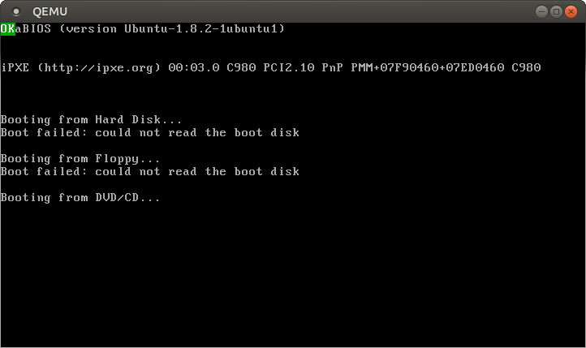

awesome... :) i am definitely trying this out today...
A minimal Multiboot Kernel
No longer updated! You are viewing the a post of the first edition of “Writing an OS in Rust”, which is no longer updated. You can find the second edition here.
This post explains how to create a minimal x86 operating system kernel using the Multiboot standard. In fact, it will just boot and print OK to the screen. In subsequent blog posts we will extend it using the Rust programming language.
I tried to explain everything in detail and to keep the code as simple as possible. If you have any questions, suggestions or other issues, please leave a comment or create an issue on Github. The source code is available in a repository, too.
Note that this tutorial is written mainly for Linux. For some known problems on OS X see the comment section and this issue. If you want to use a virtual Linux machine, you can find instructions and a Vagrantfile in Ashley Willams’s x86-kernel repository.
🔗Overview
When you turn on a computer, it loads the BIOS from some special flash memory. The BIOS runs self test and initialization routines of the hardware, then it looks for bootable devices. If it finds one, the control is transferred to its bootloader, which is a small portion of executable code stored at the device’s beginning. The bootloader has to determine the location of the kernel image on the device and load it into memory. It also needs to switch the CPU to the so-called protected mode because x86 CPUs start in the very limited real mode by default (to be compatible to programs from 1978).
We won’t write a bootloader because that would be a complex project on its own (if you really want to do it, check out Rolling Your Own Bootloader). Instead we will use one of the many well-tested bootloaders out there to boot our kernel from a CD-ROM. But which one?
🔗Multiboot
Fortunately there is a bootloader standard: the Multiboot Specification. Our kernel just needs to indicate that it supports Multiboot and every Multiboot-compliant bootloader can boot it. We will use the Multiboot 2 specification (PDF) together with the well-known GRUB 2 bootloader.
To indicate our Multiboot 2 support to the bootloader, our kernel must start with a Multiboot Header, which has the following format:
| Field | Type | Value |
|---|---|---|
| magic number | u32 | 0xE85250D6 |
| architecture | u32 | 0 for i386, 4 for MIPS |
| header length | u32 | total header size, including tags |
| checksum | u32 | -(magic + architecture + header_length) |
| tags | variable | |
| end tag | (u16, u16, u32) | (0, 0, 8) |
Converted to a x86 assembly file it looks like this (Intel syntax):
section .multiboot_header
header_start:
dd 0xe85250d6 ; magic number (multiboot 2)
dd 0 ; architecture 0 (protected mode i386)
dd header_end - header_start ; header length
; checksum
dd 0x100000000 - (0xe85250d6 + 0 + (header_end - header_start))
; insert optional multiboot tags here
; required end tag
dw 0 ; type
dw 0 ; flags
dd 8 ; size
header_end:
If you don’t know x86 assembly, here is some quick guide:
- the header will be written to a section named
.multiboot_header(we need this later) header_startandheader_endare labels that mark a memory location, we use them to calculate the header length easilyddstands fordefine double(32bit) anddwstands fordefine word(16bit). They just output the specified 32bit/16bit constant.- the additional
0x100000000in the checksum calculation is a small hack1 to avoid a compiler warning
We can already assemble this file (which I called multiboot_header.asm) using nasm. It produces a flat binary by default, so the resulting file just contains our 24 bytes (in little endian if you work on a x86 machine):
> nasm multiboot_header.asm
> hexdump -x multiboot_header
0000000 50d6 e852 0000 0000 0018 0000 af12 17ad
0000010 0000 0000 0008 0000
0000018
🔗The Boot Code
To boot our kernel, we must add some code that the bootloader can call. Let’s create a file named boot.asm:
global start
section .text
bits 32
start:
; print `OK` to screen
mov dword [0xb8000], 0x2f4b2f4f
hlt
There are some new commands:
globalexports a label (makes it public). Asstartwill be the entry point of our kernel, it needs to be public.- the
.textsection is the default section for executable code bits 32specifies that the following lines are 32-bit instructions. It’s needed because the CPU is still in Protected mode when GRUB starts our kernel. When we switch to Long mode in the next post we can usebits 64(64-bit instructions).- the
mov dwordinstruction moves the 32bit constant0x2f4b2f4fto the memory at addressb8000(it printsOKto the screen, an explanation follows in the next posts) hltis the halt instruction and causes the CPU to stop
Through assembling, viewing and disassembling we can see the CPU Opcodes in action:
> nasm boot.asm
> hexdump -x boot
0000000 05c7 8000 000b 2f4b 2f4f 00f4
000000b
> ndisasm -b 32 boot
00000000 C70500800B004B2F mov dword [dword 0xb8000],0x2f4b2f4f
-4F2F
0000000A F4 hlt
🔗Building the Executable
To boot our executable later through GRUB, it should be an ELF executable. So we want nasm to create ELF object files instead of plain binaries. To do that, we simply pass the ‑f elf64 argument to it.
To create the ELF executable, we need to link the object files together. We use a custom linker script named linker.ld:
ENTRY(start)
SECTIONS {
. = 1M;
.boot :
{
/* ensure that the multiboot header is at the beginning */
*(.multiboot_header)
}
.text :
{
*(.text)
}
}
Let’s translate it:
startis the entry point, the bootloader will jump to it after loading the kernel. = 1M;sets the load address of the first section to 1 MiB, which is a conventional place to load a kernel2- the executable will have two sections:
.bootat the beginning and.textafterwards - the
.textoutput section contains all input sections named.text - Sections named
.multiboot_headerare added to the first output section (.boot) to ensure they are at the beginning of the executable. This is necessary because GRUB expects to find the Multiboot header very early in the file.
So let’s create the ELF object files and link them using our new linker script:
> nasm -f elf64 multiboot_header.asm
> nasm -f elf64 boot.asm
> ld -n -o kernel.bin -T linker.ld multiboot_header.o boot.o
It’s important to pass the -n (or --nmagic) flag to the linker, which disables the automatic section alignment in the executable. Otherwise the linker may page align the .boot section in the executable file. If that happens, GRUB isn’t able to find the Multiboot header because it isn’t at the beginning anymore.
We can use objdump to print the sections of the generated executable and verify that the .boot section has a low file offset:
> objdump -h kernel.bin
kernel.bin: file format elf64-x86-64
Sections:
Idx Name Size VMA LMA File off Algn
0 .boot 00000018 0000000000100000 0000000000100000 00000080 2**0
CONTENTS, ALLOC, LOAD, READONLY, DATA
1 .text 0000000b 0000000000100020 0000000000100020 000000a0 2**4
CONTENTS, ALLOC, LOAD, READONLY, CODE
Note: The ld and objdump commands are platform specific. If you’re not working on x86_64 architecture, you will need to cross compile binutils. Then use x86_64‑elf‑ld and x86_64‑elf‑objdump instead of ld and objdump.
🔗Creating the ISO
All PC BIOSes know how to boot from a CD-ROM, so we want to create a bootable CD-ROM image, containing our kernel and the GRUB bootloader’s files, in a single file called an ISO. Make the following directory structure and copy the kernel.bin to the right place:
isofiles
└── boot
├── grub
│ └── grub.cfg
└── kernel.bin
The grub.cfg specifies the file name of our kernel and its Multiboot 2 compliance. It looks like this:
set timeout=0
set default=0
menuentry "my os" {
multiboot2 /boot/kernel.bin
boot
}
Now we can create a bootable image using the command:
grub-mkrescue -o os.iso isofiles
Note: grub-mkrescue causes problems on some platforms. If it does not work for you, try the following steps:
- try to run it with
--verbose - make sure
xorrisois installed (xorrisoorlibisoburnpackage) - If you’re using an EFI-system,
grub-mkrescuetries to create an EFI image by default. You can either pass-d /usr/lib/grub/i386-pcto avoid EFI or install themtoolspackage to get a working EFI image - on some system the command is named
grub2-mkrescue
🔗Booting
Now it’s time to boot our OS. We will use QEMU:
qemu-system-x86_64 -cdrom os.iso

Notice the green OK in the upper left corner. If it does not work for you, take a look at the comment section.
Let’s summarize what happens:
- the BIOS loads the bootloader (GRUB) from the virtual CD-ROM (the ISO)
- the bootloader reads the kernel executable and finds the Multiboot header
- it copies the
.bootand.textsections to memory (to addresses0x100000and0x100020) - it jumps to the entry point (
0x100020, you can obtain it throughobjdump -f) - our kernel prints the green
OKand stops the CPU
You can test it on real hardware, too. Just burn the ISO to a disk or USB stick and boot from it.
🔗Build Automation
Right now we need to execute 4 commands in the right order every time we change a file. That’s bad. So let’s automate the build using a Makefile. But first we should create some clean directory structure for our source files to separate the architecture specific files:
…
├── Makefile
└── src
└── arch
└── x86_64
├── multiboot_header.asm
├── boot.asm
├── linker.ld
└── grub.cfg
The Makefile looks like this (indented with tabs instead of spaces):
arch ?= x86_64
kernel := build/kernel-$(arch).bin
iso := build/os-$(arch).iso
linker_script := src/arch/$(arch)/linker.ld
grub_cfg := src/arch/$(arch)/grub.cfg
assembly_source_files := $(wildcard src/arch/$(arch)/*.asm)
assembly_object_files := $(patsubst src/arch/$(arch)/%.asm, \
build/arch/$(arch)/%.o, $(assembly_source_files))
.PHONY: all clean run iso
all: $(kernel)
clean:
@rm -r build
run: $(iso)
@qemu-system-x86_64 -cdrom $(iso)
iso: $(iso)
$(iso): $(kernel) $(grub_cfg)
@mkdir -p build/isofiles/boot/grub
@cp $(kernel) build/isofiles/boot/kernel.bin
@cp $(grub_cfg) build/isofiles/boot/grub
@grub-mkrescue -o $(iso) build/isofiles 2> /dev/null
@rm -r build/isofiles
$(kernel): $(assembly_object_files) $(linker_script)
@ld -n -T $(linker_script) -o $(kernel) $(assembly_object_files)
# compile assembly files
build/arch/$(arch)/%.o: src/arch/$(arch)/%.asm
@mkdir -p $(shell dirname $@)
@nasm -felf64 $< -o $@
Some comments (see the [Makefile tutorial] if you don’t know make):
- the
$(wildcard src/arch/$(arch)/*.asm)chooses all assembly files in the src/arch/$(arch)` directory, so you don’t have to update the Makefile when you add a file - the
patsubstoperation forassembly_object_filesjust translatessrc/arch/$(arch)/XYZ.asmtobuild/arch/$(arch)/XYZ.o - the
$<and$@in the assembly target are automatic variables - if you’re using cross-compiled binutils just replace
ldwithx86_64‑elf‑ld
Now we can invoke make and all updated assembly files are compiled and linked. The make iso command also creates the ISO image and make run will additionally start QEMU.
🔗What’s next?
In the next post we will create a page table and do some CPU configuration to switch to the 64-bit long mode.
🔗Footnotes
1
The formula from the table, -(magic + architecture + header_length), creates a negative value that doesn’t fit into 32bit. By subtracting from 0x100000000 (= 2^(32)) instead, we keep the value positive without changing its truncated value. Without the additional sign bit(s) the result fits into 32bit and the compiler is happy :).
2
We don’t want to load the kernel to e.g. 0x0 because there are many special memory areas below the 1MB mark (for example the so-called VGA buffer at 0xb8000, that we use to print OK to the screen).
great work in explaining how all the different pieces of hardware/software come together
Thank you!